XAdmin
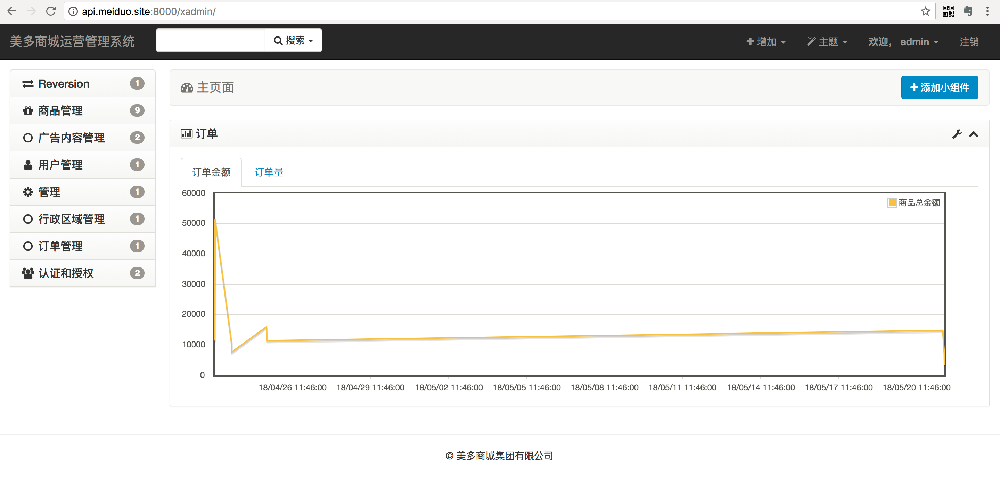
xadmin是Django的第三方扩展，可是使Django的admin站点使用更方便。
1. 安装
通过如下命令安装xadmin的最新版
pip install https://github.com/sshwsfc/xadmin/tarball/master
在配置文件中注册如下应用
INSTALLED_APPS = [
...
'xadmin',
'crispy_forms',
'reversion',
...
]
xadmin有建立自己的数据库模型类，需要进行数据库迁移
python manage.py makemigrations
python manage.py migrate
在总路由中添加xadmin的路由信息
import xadmin
urlpatterns = [
# url(r'^admin/', admin.site.urls),
url(r'xadmin/', include(xadmin.site.urls)),
...
]
2. 使用
- xadmin不再使用Django的admin.py，而是需要编写代码在adminx.py文件中。
- xadmin的站点管理类不用继承
admin.ModelAdmin，而是直接继承object即可。
在goods应用中创建adminx.py文件。
站点的全局配置
import xadmin
from xadmin import views
from . import models
class BaseSetting(object):
"""xadmin的基本配置"""
enable_themes = True # 开启主题切换功能
use_bootswatch = True
xadmin.site.register(views.BaseAdminView, BaseSetting)
class GlobalSettings(object):
"""xadmin的全局配置"""
site_title = "美多商城运营管理系统" # 设置站点标题
site_footer = "美多商城集团有限公司" # 设置站点的页脚
menu_style = "accordion" # 设置菜单折叠
xadmin.site.register(views.CommAdminView, GlobalSettings)
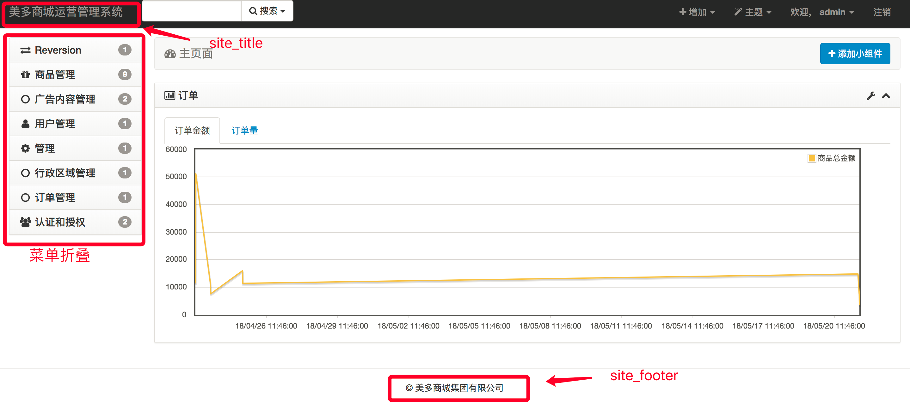
站点Model管理
xadmin可以使用的页面样式控制基本与Django原生的admin一直。
- list_display控制列表展示的字段
- search_fields控制可以通过搜索框搜索的字段名称，xadmin使用的是模糊查询
- list_filter可以进行过滤操作的列
- ordering默认排序的字段
- readonly_fields在编辑页面的只读字段
- exclude在编辑页面隐藏的字段
- list_editable在列表页可以快速直接编辑的字段
- show_detail_fileds在列表页提供快速显示详情信息
- refresh_times指定列表页的定时刷新
- list_export控制列表页导出数据的可选格式
- show_bookmarks控制是否显示书签功能
- data_charts控制显示图标的样式
- model_icon控制菜单的图标
1）model_icon
class SKUAdmin(object):
model_icon = 'fa fa-gift'
xadmin.site.register(models.SKU, SKUAdmin)
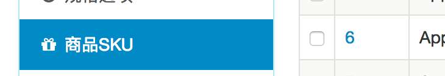
可选的图标样式参考http://fontawesome.dashgame.com/
2） list_display
list_display = ['id', 'name', 'price', 'stock', 'sales', 'comments']
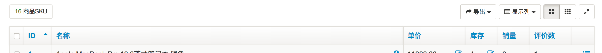
3）search_fields
search_fields = ['id','name']
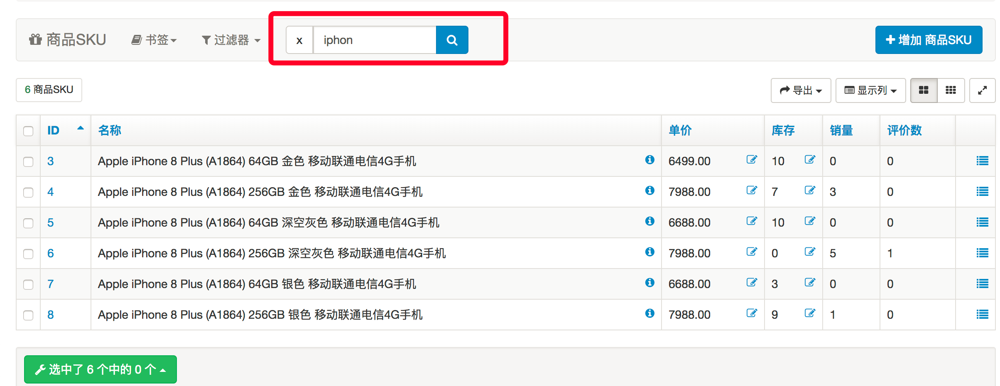
4）list_filter
list_filter = ['category']
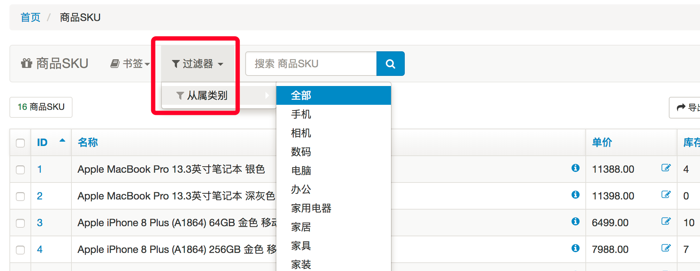
5）list_editable
list_editable = ['price', 'stock']
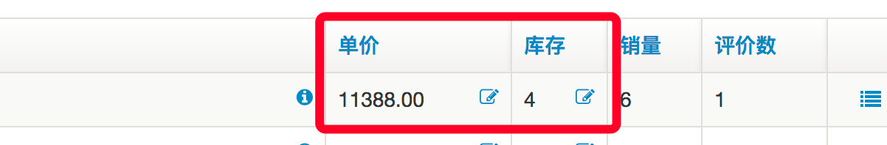
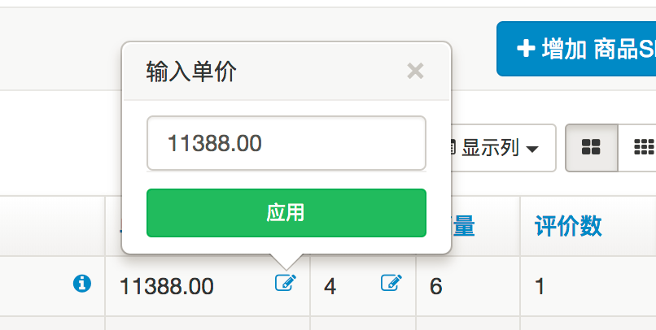
6）show_detail_fields
show_detail_fields = ['name']
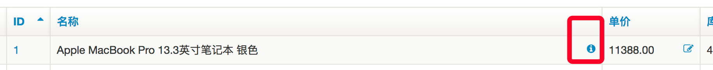
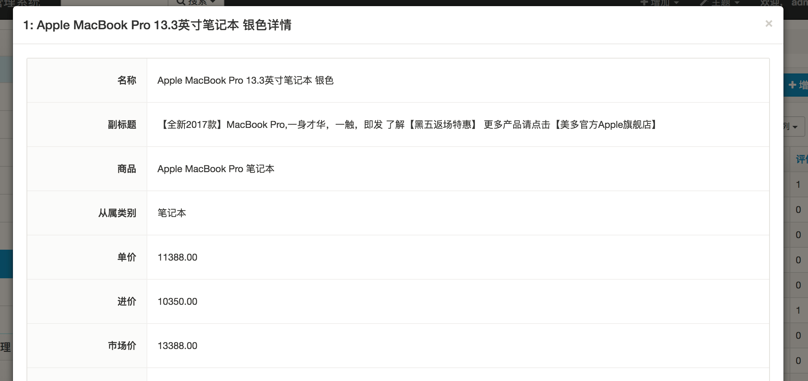
7）show_bookmarks
show_bookmarks = True
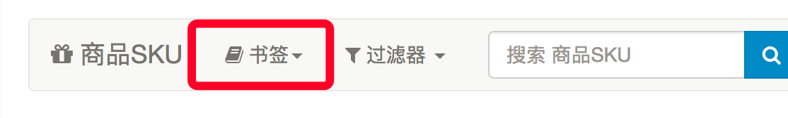
8）list_export
list_export = ['xls', 'csv', 'xml']
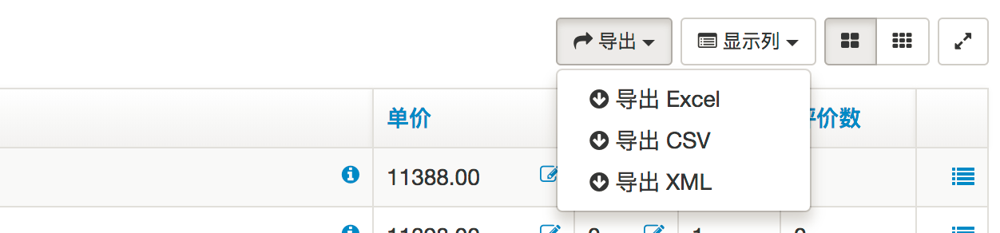
注意，导出到xls（excel) 需要安装xlwt扩展
9）refresh_times
class OrderAdmin(object):
list_display = ['order_id', 'create_time', 'total_amount', 'pay_method', 'status']
refresh_times = [3, 5] # 可选以支持按多长时间(秒)刷新页面
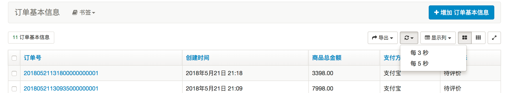
10）data_charts
data_charts = {
"order_amount": {'title': '订单金额', "x-field": "create_time", "y-field": ('total_amount',),
"order": ('create_time',)},
"order_count": {'title': '订单量', "x-field": "create_time", "y-field": ('total_count',),
"order": ('create_time',)},
}
- title 控制图标名称
- x-field 控制x轴字段
- y-field 控制y轴字段，可以是多个值
- order 控制默认排序
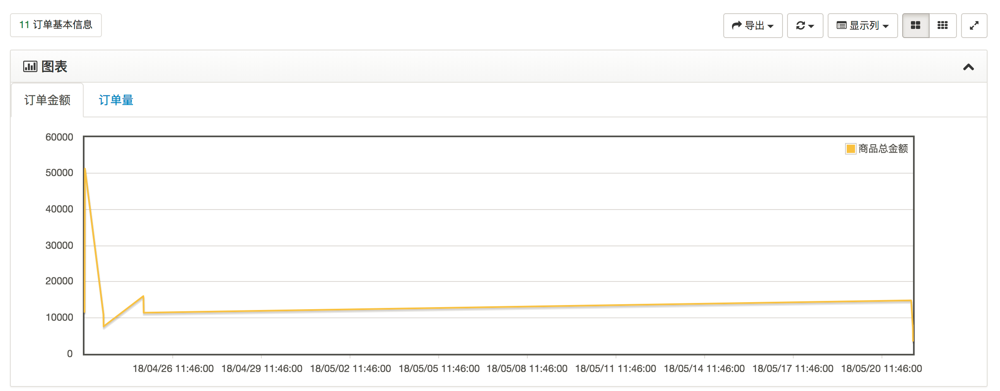
11）readonly_fields
class SKUAdmin(object):
...
readonly_fields = ['sales', 'comments']
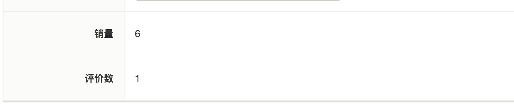
站点保存对象数据方法重写
在Django的原生admin站点中，如果想要在站点保存或删除数据时，补充自定义行为，可以重写如下方法：
save_model(self, request, obj, form, change)delete_model(self, request, obj)
而在xadmin中，需要重写如下方法：
save_models(self)delete_model(self)
在方法中，如果需要用到当前处理的模型类对象，需要通过self.obj来获取，如
class SKUSpecificationAdmin(object):
def save_models(self):
# 保存数据对象
obj = self.new_obj
obj.save()
# 补充自定义行为
from celery_tasks.html.tasks import generate_static_sku_detail_html
generate_static_sku_detail_html.delay(obj.sku.id)
def delete_model(self):
# 删除数据对象
obj = self.obj
sku_id = obj.sku.id
obj.delete()
# 补充自定义行为
from celery_tasks.html.tasks import generate_static_sku_detail_html
generate_static_sku_detail_html.delay(sku_id)
自定义用户管理
xadmin会自动为admin站点添加用户User的管理配置
xadmin使用xadmin.plugins.auth.UserAdmin来配置
如果需要自定义User配置的话，需要先unregister(User)，在添加自己的User配置并注册
import xadmin
# Register your models here.
from .models import User
from xadmin.plugins import auth
class UserAdmin(auth.UserAdmin):
list_display = ['id', 'username', 'mobile', 'email', 'date_joined']
readonly_fields = ['last_login', 'date_joined']
search_fields = ('username', 'first_name', 'last_name', 'email', 'mobile')
style_fields = {'user_permissions': 'm2m_transfer', 'groups': 'm2m_transfer'}
def get_model_form(self, **kwargs):
if self.org_obj is None:
self.fields = ['username', 'mobile', 'is_staff']
return super().get_model_form(**kwargs)
xadmin.site.unregister(User)
xadmin.site.register(User, UserAdmin)